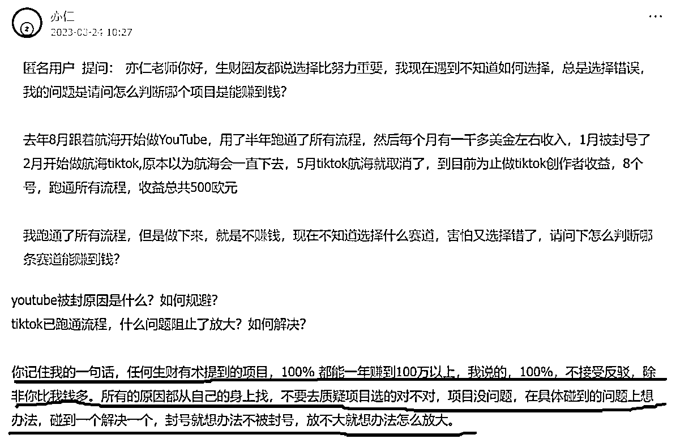

来源：https://pe3zzbrwvl.feishu.cn/docx/WiiydzuHgoWeCAxRlCucBXyKn6e
大家好，我是PONY，一名从事数字人领域的资深玩家。直到今年2月，我才开始深入研究数字人这一项目。经过一周的屡战屡败，我终于迎来了转机，并幸运地赚到了第一桶金：5万元。对我的这段经历感兴趣的圈友，可以阅读生财旧文 来了解更多细节。
在经历起初的困难后，我开始复刻之前跑通的成功模式。但随着更多数字人制作者的加入，我预见俄罗斯美女带货的竞争将日益激烈，流量获取难度增加，竞争将进入白热化。因此，我转向与中国关系良好的国家，如巴基斯坦。几天尝试后，流量意外好转，竞争者少，便开始批量采用此模式。除了短视频带货，我还进行私域引流，交易直接通过微信或支付宝，无需垫资，利润高，客户复购及推荐率高。
当然，除了通过数字人带货实现盈利，还有其他途径能带来持续收入。数字人制作本身就是个高门槛领域，选择合适的平台是很多制作者的难题。例如，国外的heygen平台平均每分钟制作成本为2美元，国内平台为4-5人民币。这对初入行的新手来说，没有任何盈利就承担高昂的成本是难以承受的，导致很多人放弃。我每天需要矩阵制作20-30个短视频来实现盈利，因此急需降低成本。经过多次尝试，我终于将成本降至0.1元/分钟，这一过程非常不易。
因此，很多数字人制作者都来向我咨询平台和低成本制作方法。起初我担心分享过多会增加竞争，但后来发现我有多个平台可供选择，便提供了两个选项：1. 仅提供平台信息，收费99元；2. 提供平台信息加使用教程，收费199元。这个尝试获得了市场的强烈反响，每天都有很多人向我求助，成为了一笔可观的收入。因此，我打算在不同平台发布短视频来引流，这成了我的第二种盈利方式——出售平台信息。
如果仅限于以上几种变现模式，如海外美女带货、私域引流、平台出售，其实是不够的。随着竞争日益激烈，利润逐渐被侵蚀是必然的趋势。因此，我开始探索新的变现方法。其中之一是利用数字人进行书单推广。我受到以往利用图片生成数字人成功案例的启发，想到如果用一些看似有智慧和经验的老者形象来做短视频推广，可能会有不错的效果。
我立刻行动起来，这种方法与之前海外美女数字人带货在本质上相似，区别只在于换了人物模型和台词。声音克隆非常简单，在11labs平台上迅速完成，仅需5分钟。意外的是，书单推广的效果远超预期，仅在项目第二周，数字人项目的总收入就已经超过20万元。
拥有了海外美女数字人带货、书单带货、私域引流和账号出售等多种盈利模式后，我并不会就此满足。过去的经验告诉我，满足于现状就如同逆水行舟，不进则退。必须持续创新，不断前行，才能持续获得流量和新客户，这是持续盈利的关键。
因此，我致力于探索新的数字人带货模式。在这个过程中，我非常感谢生财的圈友——小楠，他引领我进入了中老年养生保健品的全新领域。虽然小楠的主攻方向是无人直播带货，我则专注于短视频带货，但本质上我们都在进行带货，因此我们之间有很多经验可以互相交流。小楠无私地分享了市场上热销的中老年爆品以及他的后台数据，这种坦诚让我十分感激。
这促使我思考，为什么不尝试用海外老年人形象来推广养生保健品呢？这似乎是一个极佳的机会。经过一番努力，我开始了老年养生保健品的带货之旅。特别感谢小楠，因为通过正规渠道所能获得的佣金实在有限，而小楠通过长期的无人直播带货经验，拥有丰富的线下拿货渠道，佣金高达产品价格的一半，且结算迅速。
此外，我发现数字人制作者在视频平台面临出镜人身份验证的挑战，很多人最终求助于我。最初，我通过接受红包的形式帮助他们，但随着求助者数量增加，我意识到这是另一个变现机会。仿照之前出售平台的模式，我开始提供身份验证解决方案：99元帮助通过验证，199元教授验证方法。这样，我的数字人变现路径再次得到了扩展。
到了数字人项目的第三周，我已经探索了多种数字人变现途径，包括海外美女带货、书单带货、海外老年人带货、平台出售和出镜人身份验证解决方案等。然而，我并未因此而停止探索，开始寻找新的变现路径。当时我意识到大多数数字人内容以口播为主，于是思考是否有其他形式能带来更多流量和更高效的变现方法。
在不断研究和寻找新突破的过程中，我注意到一些国内唱歌的内容创作者在短视频平台上获得了高流量。我便想到是否可以让海外美女数字人尝试通过唱歌的方式来变现。实话说，这一尝试几乎成了一场自我折磨之旅，因为寻找能够克隆歌声的工具非常困难，市面上相关的网站极为稀少。
直到一次和圈友交流时，我被提醒了AI孙燕姿的存在——在B站上广为流传的孙燕姿翻唱视频，这些歌声都是通过克隆实现的。我随后找到了这一技术的来源：GPT-SoVITS这款开源工具。虽然对我来说是一个全新领域，但在经过一番努力，通过查看YouTube、B站以及CSDN等网站的教程，我最终在本地启动了训练人声模型的过程。经历了一周的艰辛努力，我解决了歌声克隆的难题，为我的数字人带货之旅增添了一个全新的变现路径：海外美女唱歌变现。
如果我只停留在已有的变现模式上，我的发展天花板将很快抵达。因此，我持续探索数字人领域中的全新变现机会。似乎正如那句老话所说：越努力，越幸运。我在数字人领域的不断深耕引起了周围人的关注。3月8日那天，我偶然发现了数字人变现的一个新机会：为商家提供私人定制服务。
这一发现的起因是那天下午，我的一个熟人陈姐在看到我不断分享数字人相关内容的朋友圈后，询问我是否可以帮她定制一个数字人。陈姐经营家具生意，希望在抖音发布营销短视频。传统的视频制作需要摄影师、人工参与和化妆，既耗时又费力。我为她制作了一个数字人样本，并尝试报价1万元，提供十个定制模型。她毫不犹豫地付款，这表明数字人在面向企业的定制服务领域具有广阔的发展前景。毕竟，这些商家可能对AI技术不太了解，但他们愿意为节省时间和提高效率投资。
成交那一刻，我确实有些震惊，因为这次成功来得太突然，我甚至一度以为这不过是个偶然事件。然而，当我在生财分享这个案例，将其作为一个新的风向标时，出乎意料地得到了亦仁大佬的认可，中标了。这让我意识到，这不仅仅只是偶然，而是一次绝佳的变现机遇。特别是商单的客单价高达五位数，加上这些线下老板对提速增效的强烈需求，以及他们对AI和互联网技术的有限了解，这一切都指向了为企业提供定制数字人可能是一个极佳的变现途径。
鼓舞之下，我立刻行动起来，开始积极探索周边的潜在需求，针对周围的线下实体店老板，我开始逐一营销，尝试开拓更多的商业合作机会。
3月11日那天，我成功完成了又一笔商单，并将其作为新的成功案例在生财分享。没想到，又一次得到了亦仁大大的认可，再次中标。这次的成功让我更加确信，商单是一个值得深耕的领域。亦仁大大曾经说过：“任何生财有术提到的项目，100%都能一年赚到100万以上，我说的，不接受反驳，除非你比我钱多。所有的原因都从自己的身上找，不要去质疑项目选的对不对，项目没问题，在具体碰到的问题上想办法，碰到一个解决一个，封号就想办法不被封号，放不大就想办法怎么放大。”
随后，我陆续收到了来自其他星球的星主邀请，让我去分享有关数字人商单的经验。这些经历让我坚定了全力以赴投入数字人商单项目的决心。

3万元开启4S店销售新纪元，数字人如何重塑汽车营销？
在这个快节奏的互联网时代，短视频成为连接商家和消费者的重要桥梁。然而，传统的视频制作不仅耗时耗力，更重要的是，有时还难以准确传递商家的意图——特别是在高度竞争的汽车销售行业中。
我的一个球友，一家知名汽车4S店的老板，深有体会。尽管店内聘请了形象气质出众的销售人员，但在制作用于抖音等短视频平台的宣传视频时，他们在产品展示和口头表达方面的表现远远低于预期。每次拍摄都需要投入大量的时间和成本，而成果往往不尽人意。
就在他几近绝望之时，我的一条朋友圈内容——我提供的数字人商家私人定制服务——吸引了他的注意。想象一下，一个能够流畅表达、永远不疲惫、完美展示每一款汽车亮点的数字人，这不正是他一直在寻找的解决方案吗？
决定尝试之后，我迅速行动，为他制作了三套数字人样品短视频。结果令人震惊——不仅效果惊人，与真人销售相比，这些数字人销售的表现稳定且无可挑剔，大大节省了时间和成本。
球友激动地表示，今年的汽车销售将全面采用我的数字人技术。他之前所遭受的困扰，如今终于得到了解决。这次合作，我为他定制了15个不同的汽车销售模型，以成交价3万元的价格，开启了双方的合作之路。
这个案例不仅是我技术实力的证明，更是数字人在汽车销售领域应用潜力的一次展示。我相信，随着技术的进步和应用场景的拓展，数字人将在更多行业发挥其独特的价值，帮助商家以更低的成本实现更高的营销效果。
在这个变革的时代，AI正在引领一场销售和营销的革命。让我们一起拥抱变化，迎接数字人带来的无限可能。
目前，我已经接到来自家具店、畅销书作者、4S店老板，以及从事个人IP的医生、教师、律师等行业的客户订单。这些客户对定制专属的数字人视频有着极大的需求，因为这不仅可以节省宝贵的录制时间，而且还能大幅降低成本。除此之外，餐饮、美容、健身、教育、旅游、房地产等线下行业对数字人定制服务也有着迫切的需求。在这些领域中，任何一个客户订单的价值都可能达到五位数甚至六位数。
自3月8日开始接触数字人商单以来，在短短一周内，我的生活和事业就经历了巨大的变化，到如今几乎将所有精力都投入其中，实际上我只用了10天的时间。我不仅与各行各业的圈友们建立起了联系，还收获了无数寻求合作的机会。年初设定的20万目标，在今天看来简直是微不足道。我逐渐意识到，独自前行时，我经常会感到迷茫；遇到挑战时，经常会手足无措。然而，现在我不是一个人了，我非常荣幸能够加入生财，与一群志同道合的圈友们携手同行。我坚信，未来的道路定将越走越宽。通过持续的努力和专注，今年数字人商单将是一个能够实现百万收入的项目。
许多圈友问我，PONY，面对数字人项目中的重重挫折，你是怎样一次又一次地挑战自我，最终屡败屡战的？答案其实并不复杂，成功的秘诀主要在于两点：
为了让自己坚持下去，我把这个目标公布在朋友圈，并承诺如果做不到，就给点赞的朋友每人发1000元红包，目前已有20多人点赞。我是个讲信用的人，为了不至于破财（哈哈），我今年无论如何也要完成我的目标。曹大曾说：要想干成一件大事，就得对自己下狠手。我有信心完成今年的目标，因为我已全身心投入到数字人项目，你呢？是时候对自己狠一点，为了目标努力吧！
而且，我追梦的脚步还在不断向前，最近我投入了大量的时间和精力来研发数字人离线生成系统，目前这一项目已经接近完成。我主要致力于解决线下商家在定制数字人时遇到的实际问题，如商家希望能亲自操作生成和修改视频内容，以及面对需要生成的视频长度过长和数量众多时的巨大制作成本问题。这些问题曾令我头疼不已，但幸运的是，我很早就开始思考并研究如何在离线软件中实现数字人的制作。通过将商家定制的模型导入软件并开通操作权限，商家只需输入文案即可自行生成任意长度的数字人视频。若后续需要添加新的模型，将提供额外的付费服务。
今天一早起来就觉得不对劲，全身乏力，跑步时突然眼前一黑，摔了一跤。去了医院，一查是低血糖。打了点滴后，今天就在家里躺着休息，这才有时间好好复盘自己这个月在数字人项目上的经历。感谢各位圈友的阅读，希望我的经历能给你们带来点启发。接下来，与君共勉，2024，咱们一起生财有术！
大家如果在数字人的制作过程中有任何不明白或者有问题的地方，欢迎向我提问与交流：jingdu2024